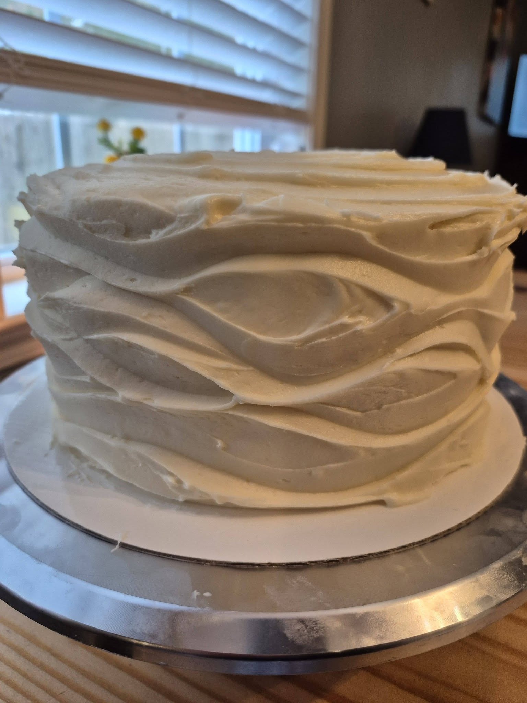

There's nothing quite like the joy of biting into a slice of perfectly moist, fluffy cake. The kind that melts in your mouth and leaves you craving another piece. But achieving that dream texture at home can feel impossible, especially when you've experienced dry, dense, or unevenly baked cakes. In this comprehensive guide, I'm sharing all the professional tips, tricks, and insider secrets I've learned over years of baking in my kitchen—and now, in my professional baking business—to help you create the perfect homemade cake every time.
Whether you're a beginner baker just starting your journey or someone with experience looking to level up your skills, the techniques in this guide will help you create cakes that rivals any professional bakery. I'll walk you through ingredient selection, mixing methods, baking science, and advanced tricks that can transform your baking game entirely.
Understanding the Role of Each Ingredient
The foundation of every moist and fluffy cake starts with understanding exactly what each ingredient does in your batter. Many home bakers add ingredients without truly understanding their purpose, which leads to mistakes. Let me break down exactly how each ingredient works:
Flour Selection and Its Impact
The type of flour you use dramatically affects your cake's final texture. Cake flour has a lower protein content (around 7-8%) compared to all-purpose flour (10-12%), making it the superior choice for light, fluffy cakes. The lower protein means less gluten development, which equals a more tender crumb. I always recommend using cake flour for the softest possible results. If you only have all-purpose flour, you can make a makeshift cake flour by replacing 2 tablespoons of all-purpose flour with cornstarch per cup.
Sugar's Dual Purpose
Sugar does more than just sweeten your cake. It's a hygroscopic ingredient, meaning it pulls moisture from the air and holds it in the cake, keeping it moist for longer. Sugar also tenderizes the crumb structure by interfering with gluten formation. Additionally, when creamed properly with butter, sugar incorporates tiny air bubbles that contribute to the cake's rise and light texture.
Butter vs. Oil: Finding the Balance
Both butter and oil serve different purposes in your cake batter. Butter provides rich flavor and helps create a fine crumb structure, but oil creates a more moist cake because it doesn't solidify as it cools. The best cakes often use a combination of both—typically 50% butter and 50% oil. This gives you the best of both worlds: the flavor of butter with the moisture-retaining properties of oil. Vegetable oil is my go-to choice because it has a neutral flavor that doesn't compete with the other ingredients.
Eggs: The Binding Agent and Moisture Keeper
Eggs serve multiple functions. Their proteins denature during baking, binding all ingredients together and providing structure. The fat in egg yolks creates richness and helps emulsify the batter, resulting in a finer crumb. Room temperature eggs are absolutely critical—cold eggs won't incorporate properly into the batter, leading to a curdled mixture that won't rise as well. I always take my eggs out of the fridge 30 minutes before baking.
Liquids: The Moisture Foundation
Milk hydrates your dry ingredients, allowing gluten to develop and creating structure. But for extra moisture and tenderness, use buttermilk, yogurt, or sour cream instead. These acidic ingredients activate baking soda and add moisture while creating an incredibly tender crumb. The acidity also balances the sweetness and adds subtle flavor depth.
Leavening Agents: Creating the Rise
Baking powder and baking soda are what make your cake rise. Baking soda reacts with acidic ingredients like buttermilk and cocoa powder, while baking powder works on its own. Always check the expiration dates on these ingredients—old leavening agents lose potency and won't help your cake rise properly. I recommend replacing leavening agents every six months for best results.
Pro Tip: Always measure your ingredients by weight using a kitchen scale, not by volume. A cup of flour measured by scooping can vary by 20-30 grams depending on how tightly you pack it. Baking is chemistry, and precision matters.
Mixing Techniques That Matter
How you combine your ingredients is just as important as what you use. Different mixing methods create different results, and understanding these techniques will help you achieve consistent, beautiful cakes every time.
The Creaming Method
This is my go-to method for most butter-based cakes. Start by beating room-temperature butter and sugar together for 3-5 minutes until the mixture is light, pale, and fluffy. During this process, you're incorporating hundreds of tiny air bubbles into the butter. These air bubbles act as nuclei for rising in the oven. After creaming, add your eggs one at a time, beating well after each addition to fully incorporate. This creates an emulsion—a stable mixture of fat and water-based ingredients. Then alternate adding your dry ingredients and liquids, starting and ending with dry ingredients.
The Sponge or Whipped Method
This method is often used for angel food cakes and sponge cakes. Eggs and sugar are whipped together until they triple in volume, creating a foam. This foam provides most of the lift in cakes made with this method. The gentle folding required to combine flour preserves these delicate air bubbles, creating exceptionally light cakes. However, these cakes typically don't stay moist as long because there's less fat in the batter.
The Muffin Method
This simpler method combines wet and dry ingredients separately, then gently folds them together. It's quick and easy, but doesn't create as fine a crumb as creaming. Use this method for heavily textured cakes like carrot cake or oil-based cakes.
Critical Rule: Once you add flour, don't overmix. Overmixing develops gluten, which creates tough, dense cakes with tunnels (large air holes). Mix just until the flour disappears—you want a few small lumps to remain. I usually mix by hand with a wooden spoon for 10-12 strokes after adding the final flour.
Maintaining Moisture Throughout Baking
Moisture is the ultimate secret to keeping cakes soft and delicious, both fresh from the oven and days later. Here are my proven moisture-retention techniques:
Use the right fat combination: As mentioned earlier, combining butter and oil creates the moistest cakes. The oil coats the flour particles and stays liquid when cooled, keeping the cake tender. I typically use 50% butter and 50% oil in my recipes.
Choose acidic liquids wisely: Buttermilk, Greek yogurt, and sour cream add moisture while creating a tender crumb. They also add subtle flavor complexity. I especially love using Greek yogurt—it's thicker than regular yogurt, adding richness without extra fat.
Master the simple syrup soak: This is a professional baker's secret that home bakers often don't know about. After baking and cooling slightly, poke small holes in each cake layer and brush with a simple sugar syrup (equal parts sugar and water, boiled and cooled). This keeps layered cakes incredibly moist for days. The syrup soaks into the crumb, hydrating it without making it soggy.
Nail the baking time: This is crucial. Many home bakers overbake their cakes, which dries them out significantly. Check your cake about 5 minutes before the recipe's recommended time. Insert a toothpick into the center—it should come out with a few moist crumbs clinging to it, not completely clean. The cake will continue cooking slightly after you remove it from the oven. This residual cooking often gets overlooked but is essential.
Baking Temperature and Timing
Oven temperature control is absolutely fundamental to cake baking success. Many home ovens run hot, cold, or unevenly, which dramatically affects results. Invest in an inexpensive oven thermometer—it's one of the best investments a baker can make. Preheat your oven fully (about 20 minutes) and place a thermometer on the center rack to check the actual temperature.
For most cakes, 350°F (175°C) is ideal. This temperature allows the cake to rise gently and bake evenly without browning too quickly. The sides and top will set before the interior fully bakes, allowing moisture to stay in.
Bake in the center: The center of your oven has the most even heat distribution. Avoid baking on multiple racks simultaneously—move racks aside or bake in batches. Positioning matters—cakes directly in the center bake most evenly.
For layer cakes, bake separately: Baking two thick layers together means one will be over-baked while the other is under-baked by the time they're done. It's better to bake thin layers separately, even if it takes longer. This ensures even baking throughout.
Professional Tricks for Extra Softness
These advanced techniques can elevate your baking from good to professional-level:
Fold in whipped egg whites: For ultra-fluffy cakes, separate one or two eggs. Beat the whites to soft peaks and gently fold them into your completed batter just before baking. This adds extra lift without toughening the cake.
Add cornstarch: Replace 1-2 tablespoons of cake flour with cornstarch per cup of flour. Cornstarch has no protein, so it creates an even more tender crumb. This trick alone can noticeably change your cake texture.
Room temperature ingredients: This cannot be overstated. Room temperature ingredients emulsify better, mix more thoroughly, and create finer cake crumbs. Take butter and eggs out 30 minutes before baking, and even warm your milk slightly.
Flavor extracts and additions: Beyond vanilla, try almond extract, coconut extract, or even a pinch of espresso powder. These don't just add flavor—they enhance the perception of moistness and complexity. Avoid artificial flavoring; quality extracts make a real difference.
Frosting and Decorating Without Compromising Texture
The frosting you choose and how you apply it affects the final eating experience. Heavy, overly sweet frosting can overpower delicate cake and compress the crumb. I prefer lighter frostings like Swiss or Italian buttercream, or even whipped cream frostings. Spread frosting thinly and evenly—you want to taste the cake, not just frosting.
For decorated cakes, apply a crumb coat (thin layer of frosting to seal in crumbs) and refrigerate before adding the final frosting layer. This creates a more professional appearance and protects the cake from drying out.
Common Mistakes and How to Avoid Them
- Using old leavening agents: Check expiration dates. Baking powder and soda lose potency over time and won't make your cakes rise properly.
- Opening the oven door repeatedly: Each time you open it, heat escapes and temperature drops. This disrupts rising. Resist the urge to peek!
- Skipping sifting: While you can often skip sifting, some recipes benefit from it to incorporate air and break up lumps in dry ingredients.
- Using cold ingredients: Cold butter, eggs, and milk create an uneven batter that won't mix properly or bake as beautifully.
- Greasing pans inadequately: Use butter or non-stick spray, then line bottoms with parchment paper. This ensures perfect release and prevents sticking.
- Filling pans too full: Fill pans only 2/3 full. Overfilled pans spill and create domed, uneven cakes.
Serving and Storing Your Perfect Cake
How you store and serve your cake matters as much as how you bake it. Cakes taste best at room temperature, as flavors are more pronounced and the texture is ideal. If you refrigerated your cake, remove it 30 minutes before serving to allow it to come to temperature.
For storage, keep your cake in an airtight container at room temperature for up to two days. Buttercream-frosted cakes can last longer because the frosting protects the cake from drying out. For longer storage, wrap undecorated cake layers tightly in plastic wrap and freeze for up to three months. Thaw at room temperature before decorating.
Final Thoughts
Creating moist and fluffy cakes is entirely achievable with proper understanding, consistent practice, and attention to detail. The techniques in this guide are based on baking science and years of experience—they work. Start with quality ingredients, pay attention to temperatures, measure carefully, mix properly, and watch your baking times closely.
Remember that baking is both an art and a science. While following recipes exactly matters, understanding the "why" behind each step empowers you to troubleshoot when something doesn't work perfectly. Every oven is different, so pay attention to yours and adjust accordingly.
I'd love to help you create your perfect cake. Ready to put these tips into action? Order a custom cake from my local ordering service or try these techniques with your favorite cake recipe. If you have questions about baking, feel free to reach out through our contact page. Happy baking!